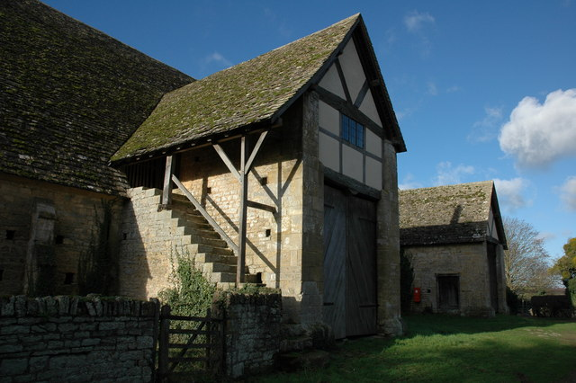
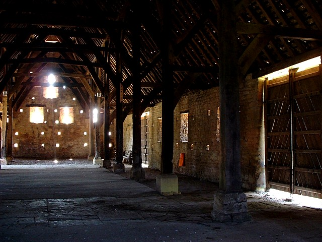

Local Cotswold stone
The walls are built from local stone, giving the barn a grounded, regional character that ties it to the surrounding landscape.
Discover Bredon Barn
A medieval landmark near TewkesburyArchitecture
Bredon Barn feels memorable because its structure is simple, massive, and carefully made. The building turns agricultural necessity into visual drama.

Features
The walls are built from local stone, giving the barn a grounded, regional character that ties it to the surrounding landscape.
The roofline contributes strongly to the building's silhouette and helps the structure feel tall, broad, and purposeful.
Inside, the barn opens into a dramatic space where repeated structural bays create rhythm and visual depth.
One of the most distinctive details mentioned by the National Trust is the unusual stone chimney cowling, which adds character to the exterior.
What makes the barn visually strong is that its beauty comes from function. It was built to hold produce, create shelter, and withstand weather and time. That practical purpose explains the thickness of the walls, the scale of the enclosed space, and the overall feeling of permanence.
Because the architecture is so direct, the building is easy to read. Visitors can understand its purpose simply by looking at it. That clarity is useful for the website too, because it allows content to move from physical details to historical meaning without feeling forced.

Bredon Barn is not only interesting as an object. It is also interesting as a space. The contrast between the rough stone shell and the open interior creates a sense of calm and scale that many modern buildings do not have. The barn feels rooted in farming history, but it also feels sculptural.
That atmosphere is why the site design uses generous spacing, muted colours, and large image areas. The goal is not to imitate the building literally, but to reflect its calm weight and strong sense of place.
See current research notes for access, location, and visitor information.
Go to Visit page